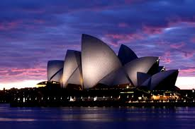
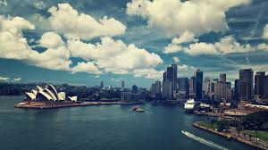
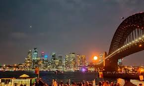

Estatua de la Libertad
Con su distintiva arquitectura de "velas", es un símbolo mundial de la ciudad.
Sídney, fundada en 1788 como una colonia penal británica, es la ciudad más antigua de Australia. Creció rápidamente gracias a la inmigración y su puerto natural, uno de los más grandes y bellos del mundo. Hoy es una metrópoli vibrante, famosa por su Ópera, playas y diversidad cultural.
Con su distintiva arquitectura de "velas", es un símbolo mundial de la ciudad.
Un icónico puente de arco que conecta el centro con el norte de la ciudad.
Una de las playas más famosas de Australia, conocida por su arena dorada y cultura surfista.
La cultura de Sídney es una mezcla vibrante de influencias occidentales e internacionales, impulsada por su diversidad étnica. Es un centro para las artes, la moda y el deporte, con una escena multicultural que incluye festivales, música y gastronomía global.
